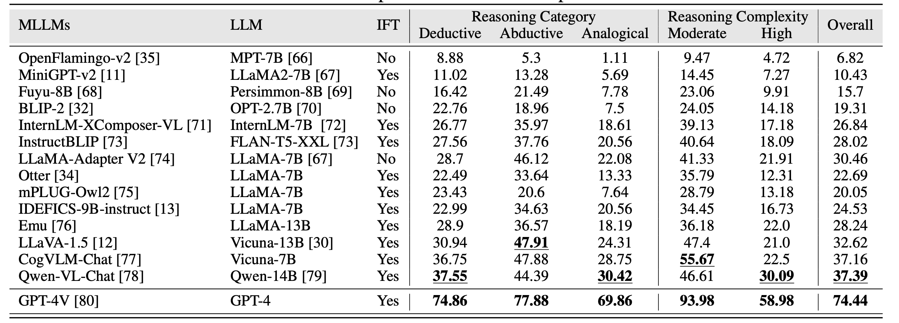

Reasoning, Multi-modal Large Language Models, Benchmark, Multi-modal Chain-of-Thought, Multi-modal in-context learning
Multi-modal Large Language Models (MLLMs) are increasingly prominent in the field of artificial intelligence. These models not only excel in traditional vision-language tasks but also demonstrate im- pressive performance in contemporary multi-modal benchmarks. Although many of these benchmarks attempt to holistically evaluate MLLMs, they typically concentrate on basic reasoning tasks, often yielding only simple yes/no or multi-choice responses. These methods naturally lead to confusion and difficulties in conclusively determining the reasoning capabilities of MLLMs. To mitigate this issue, we manually curate a benchmark dataset specifically designed for MLLMs, with a focus on complex reasoning tasks. Our benchmark comprises three key reasoning categories: deductive, abductive, and analogical reasoning. The queries in our dataset are intentionally constructed to engage the reasoning capabilities of MLLMs in the process of generating answers. For a fair comparison across various MLLMs, we incorporate intermediate reasoning steps into our evaluation criteria. In instances where an MLLM is unable to produce a definitive answer, its reasoning ability is evaluated by requesting intermediate reasoning steps. If these steps align with our manual annotations, appropriate scores are assigned. This evaluation scheme resembles methods commonly used in human assess- ments, such as exams or assignments, and represents what we consider a more effective assessment technique compared with existing benchmarks. We evaluate a selection of representative MLLMs using this rigorously developed open-ended multi-step elaborate reasoning benchmark, designed to challenge and accurately measure their reasoning capabilities.

@proceedings{Xiao2023core,
title={CORE-MM: Complex Open-ended Reasoning Evaluation for Multi-modal Large
Language Models},
author={Xiaotian Han, Quanzeng You, Yongfei Liu, Wentao Chen, Huangjie Zheng, Khalil Mrini, Xudong Lin, Yiqi
Wang, Bohan Zhai, Jianbo Yuan, Heng Wang, and Hongxia Yang},
journal={Arxiv},
year={2023}
eprint={2302.12242},
archivePrefix={arXiv},
primaryClass={cs.CV}
}